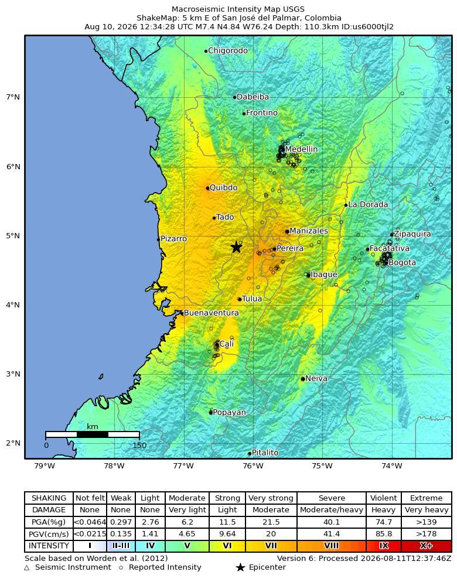
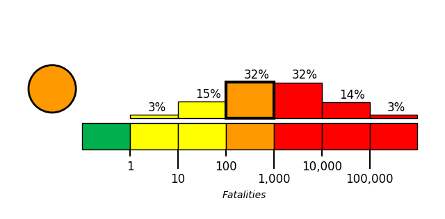
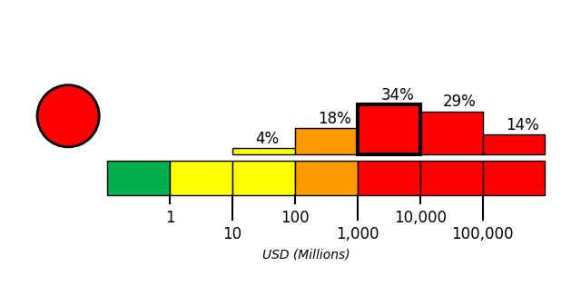

On August 10, 2026, at approximately 07:34 local time (America/Bogota; 2026-08-10 12:34 UTC), a magnitude 7.4 earthquake, with a reported depth of 110.285 km, occurred 5 km S of San José del Palmar, Colombia. The USGS epicenter was at 4.8436° latitude and -76.2422° longitude.
Extensive diversity and complexity of tectonic regimes characterizes the perimeter of the Caribbean plate, involving no fewer than four major plates (North America, South America, Nazca, and Cocos). Inclined zones of deep earthquakes (Wadati-Benioff zones), ocean trenches, and arcs of volcanoes clearly indicate subduction of oceanic lithosphere along the Central American and Atlantic Ocean margins of the Caribbean plate, while crustal seismicity in Guatemala, northern Venezuela, and the Cayman Ridge and Cayman Trench indicate transform fault and pull-apart basin tectonics.
Along the northern margin of the Caribbean plate, the North America plate moves westwards with respect to the Caribbean plate at a velocity of approximately 20 mm/yr. Motion is accommodated along several major transform faults that extend eastward from Isla de Roatan to Haiti, including the Swan Island Fault and the Oriente Fault. These faults represent the southern and northern boundaries of the Cayman Trench. Further east, from the Dominican Republic to the Island of Barbuda, relative motion between the North America plate and the Caribbean plate becomes increasingly complex and is partially accommodated by nearly arc-parallel subduction of the North America plate beneath the Caribbean plate. This results in the formation of the deep Puerto Rico Trench and a zone of intermediate focus earthquakes (70-300 km depth) within the subducted slab. Although the Puerto Rico subduction zone is thought to be capable of generating a megathrust earthquake, there have been no such events in the past century. The last probable interplate (thrust fault) event here occurred on May 2, 1787 and was widely felt throughout the island with documented destruction across the entire northern coast, including Arecibo and San Juan. Since 1900, the two largest earthquakes to occur in this region were the August 4, 1946 M8.0 Samana earthquake in northeastern Hispaniola and the July 29, 1943 M7.6 Mona Passage earthquake, both of which were shallow thrust fault earthquakes. A significant portion of the motion between the North America plate and the Caribbean plate in this region is accommodated by a series of left-lateral strike-slip faults that bisect the island of Hispaniola, notably the Septentrional Fault in the north and the Enriquillo-Plantain Garden Fault in the south. Activity adjacent to the Enriquillo-Plantain Garden Fault system is best documented by the devastating January 12, 2010 M7.0 Haiti strike-slip earthquake, its associated aftershocks and a comparable earthquake in 1770.
Moving east and south, the plate boundary curves around Puerto Rico and the northern Lesser Antilles where the plate motion vector of the Caribbean plate relative to the North and South America plates is less oblique, resulting in active island-arc tectonics. Here, the North and South America plates subduct towards the west beneath the Caribbean plate along the Lesser Antilles Trench at rates of approximately 20 mm/yr. As a result of this subduction, there exists both intermediate focus earthquakes within the subducted plates and a chain of active volcanoes along the island arc. Although the Lesser Antilles is considered one of the most seismically active regions in the Caribbean, few of these events have been greater than M7.0 over the past century. The island of Guadeloupe was the site of one of the largest megathrust earthquakes to occur in this region on February 8, 1843, with a suggested magnitude greater than 8.0. The largest recent intermediate-depth earthquake to occur along the Lesser Antilles arc was the November 29, 2007 M7.4 Martinique earthquake northwest of Fort-De-France.
The southern Caribbean plate boundary with the South America plate strikes east-west across Trinidad and western Venezuela at a relative rate of approximately 20 mm/yr. This boundary is characterized by major transform faults, including the Central Range Fault and the Boconó-San Sebastian-El Pilar Faults, and shallow seismicity. Since 1900, the largest earthquakes to occur in this region were the October 29, 1900 M7.7 Caracas earthquake, and the July 29, 1967 M6.5 earthquake near this same region. Further to the west, a broad zone of compressive deformation trends southwestward across western Venezuela and central Colombia. The plate boundary is not well defined across northwestern South America, but deformation transitions from being dominated by Caribbean/South America convergence in the east to Nazca/South America convergence in the west. The transition zone between subduction on the eastern and western margins of the Caribbean plate is characterized by diffuse seismicity involving low- to intermediate-magnitude (M<6.0) earthquakes of shallow to intermediate depth.
The plate boundary offshore of Colombia is also characterized by convergence, where the Nazca plate subducts beneath South America towards the east at a rate of approximately 65 mm/yr. The January 31, 1906 M8.5 earthquake occurred on the shallowly dipping megathrust interface of this plate boundary segment. Along the western coast of Central America, the Cocos plate subducts towards the east beneath the Caribbean plate at the Middle America Trench. Convergence rates vary between 72-81 mm/yr, decreasing towards the north. This subduction results in relatively high rates of seismicity and a chain of numerous active volcanoes; intermediate-focus earthquakes occur within the subducted Cocos plate to depths of nearly 300 km. Since 1900, there have been many moderately sized intermediate-depth earthquakes in this region, including the September 7, 1915 M7.4 El Salvador and the October 5, 1950 M7.8 Costa Rica events.
The boundary between the Cocos and Nazca plates is characterized by a series of north-south trending transform faults and east-west trending spreading centers. The largest and most seismically active of these transform boundaries is the Panama Fracture Zone. The Panama Fracture Zone terminates in the south at the Galapagos rift zone and in the north at the Middle America trench, where it forms part of the Cocos-Nazca-Caribbean triple junction. Earthquakes along the Panama Fracture Zone are generally shallow, low- to intermediate in magnitude (M<7.2) and are characteristically right-lateral strike-slip faulting earthquakes. Since 1900, the largest earthquake to occur along the Panama Fracture Zone was the July 26, 1962 M7.2 earthquake.
References for the Panama Fracture Zone: Molnar, P., and Sykes, L. R., 1969, Tectonics of the Caribbean and Middle America Regions from Focal Mechanisms and Seismicity: Geological Society of America Bulletin, v. 80, p. 1639-1684.

The earthquake caused widespread building damage across western Colombia, particularly in Cali, Pereira, Quibdo and Manizales [4][5]. Officials reported 1,575 damaged homes, including 37 completely destroyed, together with 61 collapsed buildings, 18 damaged health centres, 52 educational centres and 17 community centres [3][9]. Another official estimate described approximately 1,600 damaged buildings, including at least 61 complete collapses [10][15]. Municipal reporting indicated at least 58 collapsed buildings in Pereira and 40 in Cali [7], while another report, apparently reflecting a different reporting time or scope, cited at least 20 collapses in Cali [13]. Documented localized damage included a partially collapsed building in Pereira [1], collapsed buildings and a partially collapsed building in Cali [1][14], a damaged multi-story building and commercial store in Manizales [1][11], and damage to the Cathedral of Manizales and the tower of the Metropolitan Cathedral Basilica of Nuestra Senora del Rosario [6][12]. A church facade also partially collapsed [2], while dozens of buildings in Cali were reportedly destroyed or left dangerously unstable [8].
Officials reported damage to 18 roads [3][9]. Aviation infrastructure experienced substantial disruption: La Nubia Airport (Manizales), Matecaña International Airport (Pereira), El Edén International Airport (Armenia), El Caraño Airport (Quibdó), Santa Ana Airport (Cartago), and Gerardo Tobar López Airport (Buenaventura) were reported closed [16][17]. Colombia's Civil Aviation Authority reported structural damage at these six airports and suspended operations, while other accounts described the damage as possible pending structural safety inspections [9][13][19][22]. Pereira, Manizales, Armenia, Cartago and Buenaventura airports were subsequently limited to medical and government flights during damage assessments, and five airports reportedly remained closed to regular passenger operations [18]. Some sources reported seven suspended airports by additionally including Cali [20][23], whereas another reported only five airports and omitted Manizales [21].
Casualties, displacement, and shelter: One week after the earthquake, the latest Sunday assessment from the National Unit for Disaster Risk Management (UNGRD) listed 289 deaths, five fewer than the Saturday total [25]. The Saturday bulletin had reported 294 deaths, 3,935 injured people, 320 missing people, and 353 rescues [9]. UNGRD reported that 44,936 families and 102,105 people across 15 departments and 426 municipalities were affected [30]. The government stated that tens of thousands of homes were damaged and more than 100,000 people needed shelter and aid [24]. Immediate emergency response: President Abelardo de la Espriella declared a national emergency following the earthquake [29]. He subsequently declared an economic emergency intended to create a relief fund for hospitals, schools, and homes [28], and Colombia declared three days of national mourning [9]. On Tuesday, rescue crews and civilians searched rubble across dozens of western Colombian cities and towns for trapped survivors [7]. A digital database recorded more than 2,000 missing people, predominantly in Cali and Pereira, by late Monday [32], while Asocapitales launched a formal reporting and search system for missing persons [31]. On Thursday, hundreds of volunteers assisted search-and-rescue operations [28]. By Friday, rescuers reported apparent signs of life beneath rubble in two heavily affected cities, and teams from Venezuela, Argentina, and Israel had joined the search [26]. A newborn boy was among those pulled alive from the debris [27]. Recovery and continuing assistance: One week after the earthquake, emergency operations entered a new phase, with teams concentrating on recovering victims' bodies while authorities began preparing reconstruction [25]. As the response moved into recovery, debris-removal efforts intensified with heavy machinery, while authorities and rescuers warned that the chances of finding additional survivors had fallen drastically [25]. President de la Espriella announced a “Marshall Plan” to rebuild the area most affected by the earthquake [24]. India also sent assistance, although the available report did not specify its form [30]. Reports characterized the anticipated recovery as long and expensive because of the extensive damage across western Colombia and the large numbers of deaths and injuries [33].
USGS PAGER tool estimated the fatalities to be in the orange alert level, which is most likely between 100 and 1,000 with a probability of 32%.
USGS PAGER tool estimated the economic loss to be in the red alert level, which is most likely between 1,000 and 10,000 million dollars with a probability of 34%.

